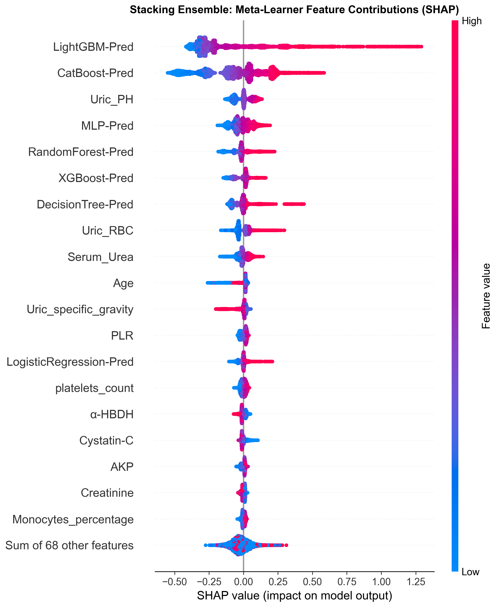
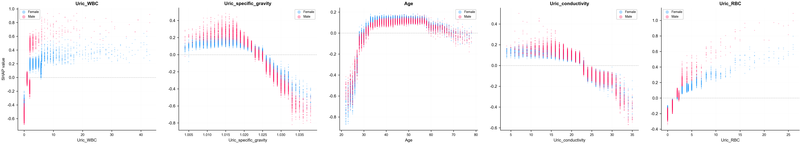
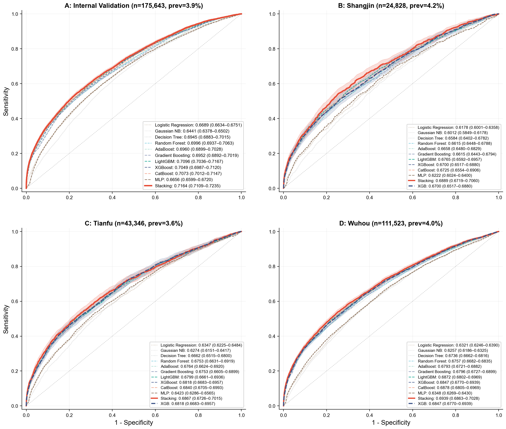
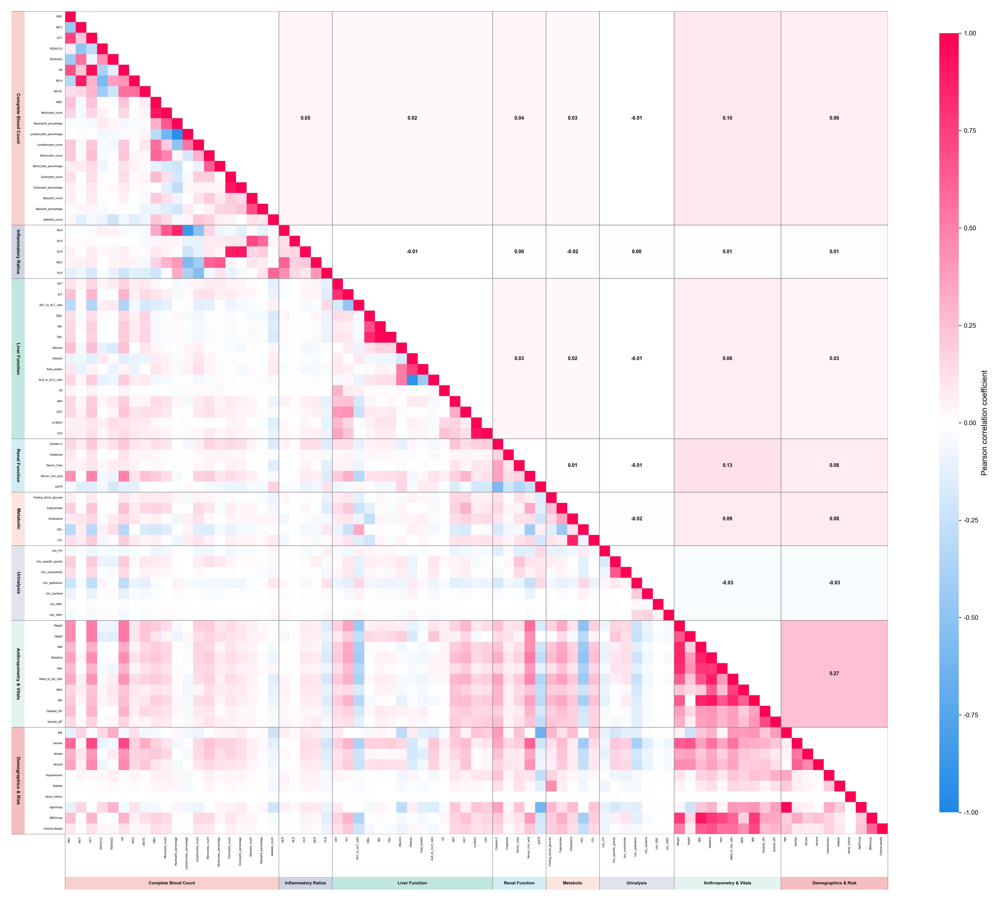
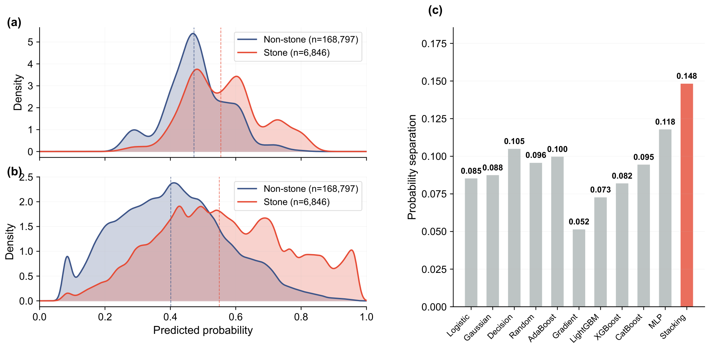

Figure 03 · Global explanation
Global Feature Contributions: Risk is not a black box
Click to enlarge. SHAP beeswarm plot showing direction and magnitude of each feature's contribution, colour-coded by raw feature value.
Population-scale Screening for Urolithiasis Using Ensemble Learning with Non-imaging Biomarkers from Routine Health Check-ups: A Multicentre Retrospective Study
A multicentre retrospective study leveraging 799,824 routine health check-up records to identify high-risk individuals before imaging — using stacked ensemble learning and SHAP-driven explainability.

01 / Highlights
02 / Explainability
SHAP (SHapley Additive exPlanations) reveals the direction and magnitude of each feature's contribution to individual predictions, ensuring transparent and auditable model decisions.
Click to enlarge. SHAP beeswarm plot showing direction and magnitude of each feature's contribution, colour-coded by raw feature value.

Click to enlarge. Dependence plots reveal non-linear relationships between individual biomarkers and predicted risk.
03 / External Validation
Generalisation performance evaluated on 181,336 independent external validation samples.

Click to enlarge. ROC curve of Stacking XGBoost on the external validation set, AUROC 0.7123.

Click to enlarge. Correlation heatmap across 77 input features.

Click to enlarge. Comparison of model output probability density between positive and negative samples.